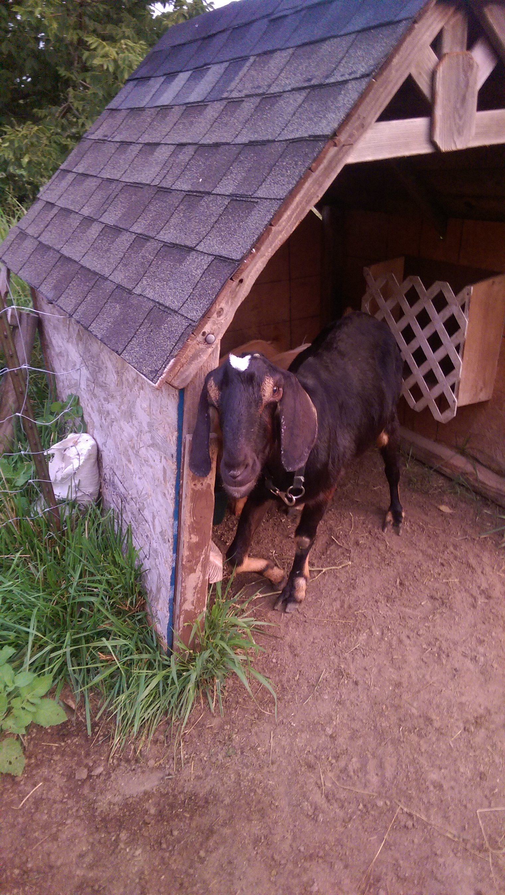
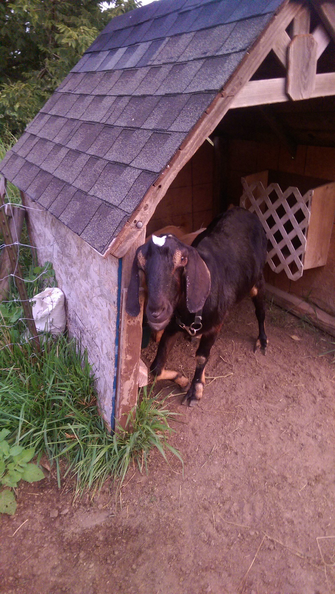
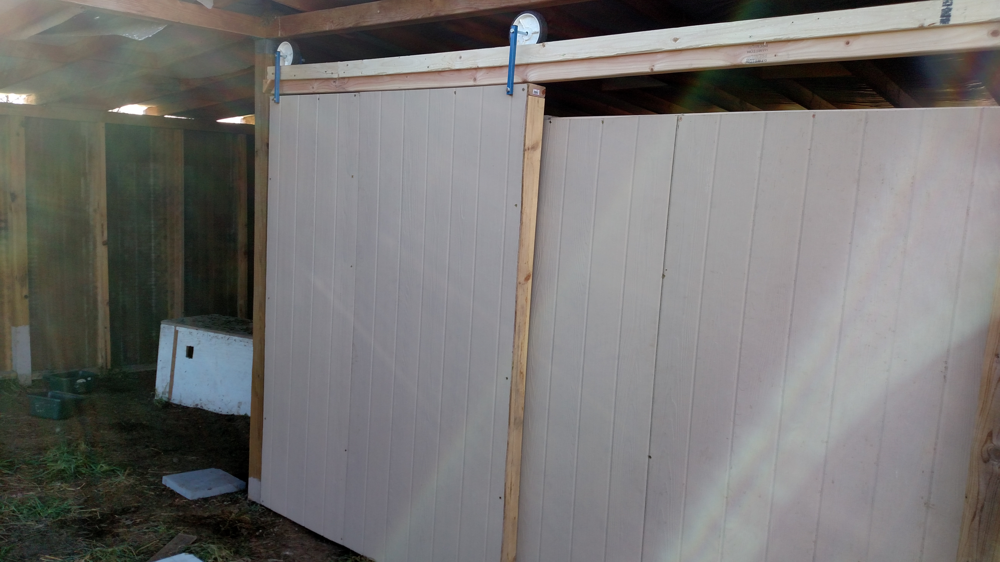
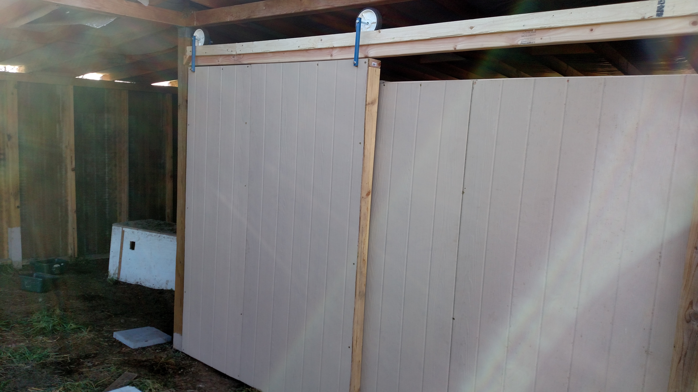

Goat Barn
Here we'll follow the evolution of the current goat barn on the farm. We feel we're nothing if not resourceful, and a little bit cheap...so we cobbled together a lot of different things until we had the time and help to build a real structure. We had goats for about a year before we invested more than $100 into infrastructure. With some elbow grease, creativity, and innovation, it's possible to "make do" quite nicely.
The Old Man Shed" and carport
 

The farm as we bought it had a great barn and small pasture for some cows, but nothing adequate for goats. While the barn pasture had decent fence, it was a bit too far for comfort, given the number of coyotes we hear at night. Plus, we thought it would be nice to have the goats a bit closer to home, given their friendliness. In the future, once milking starts, it will also be nice to not walk so far to get chores done.
The first goats, Clover and Flow, came to the farm in May 2015, and lived in the backyard of the house until a better home was constructed. The very first goat 'house' was simply a box made out of leftover shelving units, of all things - enough to fit the two of them as kids. While they still fit in that, Eric's parents dismantled a wooden swingset and playhouse at their home, the components of which we happily took. The house-shaped top of the play area got a shingled roof and OSB sides and became a larger, more sturdy home for the girls. It became dubbed the "Old Man Shed" awhile later when a visiting elderly goat claimed it as his favorite spot.
Still definitely a temporary fix, some fence was put up a short distance from the house and the Old Man Shed moved. Margaret spent $50 at a farm auction that summer and got a portable carport with a tarp covering, which became the next big shelter. It worked wonderfully: the front and back panels could be rolled up or left down as needed for ventilation or windbreak, and in the winter the light color added a greenhouse effect.
The trouble with the carport was Midwest weather. High winds flipped it over several times, even after sandbagging the frame, tying cinderblocks on the frame, and anchoring it to t-posts pounded two feet into the ground. Something else definitely needed to be done.
"Real" barn design and construction

So in spring 2016 --once it was warm enough to work outside and dig holes, but thankfully before the wet season-- we (with Margaret's parents) built a proper barn.
The new barn is an L-shape, basically three 10ftx10ft squares put together. The inside corner of the L is the highest point of the roof. Because of where the goat yard had to be situated on the property, the barn doesn't open to the south as it should - but there are solid walls on one north-facing edge and the western edge, which is where the worst winds come from.
The frame is comprised of vertical 4x4 posts with horizontal double 2x4s supporting the roof. The "ribs" of the roof are also 2x4s, as are wall studs. We used faux-wood panelling for the walls; they're relatively cheap and somewhat water-resistant (though we hope to get external paint on the walls...someday). The roof was aluminum roofing, some purchased and some scavenged from leftovers of a garage construction project. We love recycling and saving money!
One of the challenges of the barn was its location - it sits on a hill, and the ground was not levelled out before construction. We had some water and drainage issues once the heavy rain season hit. Eric built a small berm uphill of the barn, which does a good job of redirecting water away from the structure. The angle of the roof is such that rain hitting the roof will drop on the downhill side, of course.
Milk room installation
 

Margaret's parents visited again in fall 2016 and helped add a milk room to the barn and put up some additional walls. As mentioned, the floor of the barn isn't level - but for the milk room this wouldn't do. The floor there was dug out, a drain pipe installed (6" perforated plastic pipe, going through the milk room area and out the downhill side of the barn) to help with drainage further. Pavers were laid down as a floor, and a half-wall installed to keep the goats on their side. For extra wind protection and insulation, we added a sliding door that either sits alongside the wall of the milk room (allowing more airflow) or slid to seal off part of the barn (to conserve heat and reduce wind). On another wall, we custom cut a tarp that can be pinned to block wind and, since it's a light tarp, lend some greenhouse effect warmth.
Summary
| Things that worked well | Things we'd do differently |
|---|---|
|
|